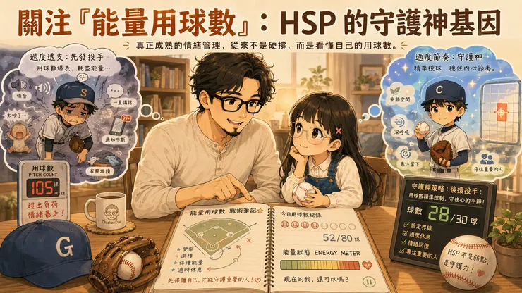
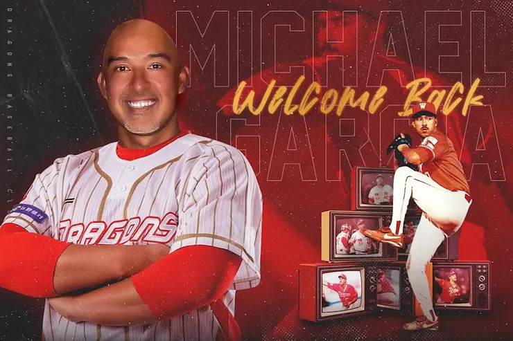

台灣的棒球盛行，有別於學生棒球，進入職業之後，球隊的分工更細、對手更強，一個好的選手不能只靠自己埋頭訓練，更重要的，是透過團隊、透過數據，找出自己最適合的角色。雞爸爸最近發現，一個爭冠的棒球隊，投手教練是非常重要的一環，一旦有狀況發生，什麼時候暫停、暫停有沒有效果，都是平日與球員間信任的累積。而家庭關係，似乎也是同樣的道理...

雞爸爸最近發現，一支想要爭冠的棒球隊，投手教練是非常重要的一環。
從平日與球員的溝通、掌握每個人的身體狀況，到比賽出現危機時，選擇什麼時間喊暫停，以及這次暫停到底有沒有效果，背後都是學問。
如果投手已經球速下降、控球偏移，甚至開始被連續安打，教練走上投手丘，若只是拍拍肩膀、說句「相信自己」，卻沒有看懂投手究竟是體力不足、動作跑掉，還是心態太急，那麼暫停結束之後，下一球可能還是照樣挨打。
職業棒球的分工，比學生棒球更細，面對的對手也更強。一個好的選手不能只靠自己埋頭苦練，更需要透過長期觀察與數據，找出最適合自己的角色。
同樣地，一位好的投手教練，不只是在危機時走上投手丘，還要知道每次暫停究竟要處理什麼。是幫投手重新整理節奏？調整配球策略？提醒動作上的問題？還是該讓牛棚開始熱身，準備做出換投決定？
這些臨場判斷，其實都來自平日對球員的關注，以及對每個人優點、限制與定位的理解。想到這裡，雞爸爸忽然發現：高敏感家庭，也需要一位懂得看用球數的投手教練。
過份強調每球都要投到完美角度
如果把成年人的一天，想像成一場先發任務，高敏感族群可能會比別人更早達到能量用球數的上限。上班、回覆訊息、接送孩子、整理家裡，到了晚上還要面對哭聲、玩具，以及永遠收不完的衣服。
一般人可能覺得：「誰不是這樣過一天？這些不都是小事嗎？」
但對高敏感的人來說，工作場合裡的氣氛、別人的語氣變化、家中的聲音與雜亂、孩子突然大哭，甚至手機裡那封還沒回覆的訊息，都可能被大腦接收進來，再仔細處理一遍。
有些投手看了捕手暗號就投，而高敏感投手，卻每一球都想控制在邊邊角角。不只要完成，還要完成得夠好；不只聽見一句話，還會反覆思考那句話背後的意思。也因此，每一球都投得太過專注，能量自然消耗得更快。
高敏感不是疾病，也不等於抗壓性差。比較像是一套接收訊號更細、處理資訊更深入的系統。它能帶來觀察力、同理心與創造力，也更容易因為長時間的刺激而疲累。
晚餐前，是鼠姊姊的危險局數
雞爸爸最近的觀察發現，鼠姊姊最容易爆哭的時間，經常出現在晚餐前。那時候的她又餓、又累，家裡可能同時有電視聲、龍弟弟的叫聲，以及大人催促吃飯、洗手、收玩具的各種指令。
平常可以輕鬆處理的打者，到了這個時段，都可能敲出長打。以前看到她為了一件小事崩潰，雞爸爸也會忍不住想：「這有嚴重到需要哭成這樣嗎？」
現在，我開始換一個角度看：她今天已經投了幾球？
眼前讓她爆哭的事情，可能只是最後一名打者。真正讓她失守的，是前面好幾局累積下來的疲勞。這時候如果大人只是叫她「不要哭了」或「先冷靜」，就像投手教練走上投手丘，只說一句：「控球穩一點。」
道理大家都知道，球評也都知道把球壓低，但沒有真正解決問題。
如果孩子餓了，就先補充一點食物；如果環境太吵，就先降低聲音；如果同時出現太多要求，就把指令減少；如果她已經完全沒有力氣，也可以暫時換人接手。
暫停不是目的，讓投手重新找回節奏，或者在失分擴大以前完成調度，才是暫停真正的意義。
家庭裡，也需要看懂局勢的教練
棒球場上要贏球，不只是擁有厲害的選手。更多時候，勝負的關鍵在於教練能不能讀懂比賽。因為這世界上沒有不失分的球隊，但真正能奪冠的球隊，不是從頭到尾都不犯錯，而是在狀況發生時，知道如何踩住煞車，先阻止傷害繼續擴大，再等待反攻的機會。
當球員過度專注於眼前的輸贏，開始逞強、硬拚，甚至想靠一顆更用力的球討回面子時，教練的工作不是陪他一起陷入勝負慾。
不是壓下這股不服輸的勁，而是引導到正確的方向。
家庭，也是一樣。
孩子正在爆哭時，雞爸爸很容易也進入自己的勝負模式：
「我今天一定要讓你聽懂道理。」
「這個習慣現在不改，以後還得了？」
「明明只是一件小事，為什麼不能好好說？」
但當家人已經沒有力氣，繼續爭論當下的輸贏，往往只會讓場面從一支安打，變成無人出局、滿壘的大危機。好的家庭教練，不是每一次都要當場分出勝負，而是知道什麼時候該先穩住局勢。
少說幾句、降低音量、移開刺激源，或者暫時讓另一個人接手。先把這一局守下來，才有下一次反攻的機會。
曾被放錯位置的救援王賈西
1996年味全龍找來了一位美職層級最高 2A的外援，初登板對時報鷹 7 局就被擊出 9 安打失了 7 分，在那個強調完投能力的時代，看起來就像另一個免洗洋將。翻譯蘇元泰先生還記得那時候總教練徐生明要他直接翻譯給這投手聽：「XX娘，你是在投啥小！」
第二場的登板還是先發 7 局，被敲 9 支安打，控球和壓制力，依舊在球賽後半段急速下降。但「棒球魔術師」徐生明，好像讀懂了他的使用說明書：「體力不足，卻有每九局 10.93 的高三振率，短局數強大的壓制能力」。於是1996 年 4 月 6 日開始專司後援，這位投手就是後來帶領味全三連霸的傳奇球星－賈西。
接下來，賈西不但蟬連三年單季最多救援成功，幫助味全龍拿下連霸。曾因先發大爆炸的 96 年，最後以2.09防禦率成為年度投手三振王。隔年還以 1.89 順便拿了防禦率王。曾經不足以先發的體力，反而是在後援投手時的強板，好多次都直接從7局一路關門。

味全龍傳奇球星-救援王賈西
不是突然學會投球 而是找到最適合的位置
如果當年始終要求賈西留在先發輪值，大家可能只會記得一位續航力不足的普通投手。但當教練不再強求「怎麼才能讓他投更長的局數」，而是思考「他在哪裡最能發揮」，一位傳奇守護神就此出現。
高敏感的人，也很像這類的投手。他們可能很適合深度思考、文字創作、一對一交流、觀察情緒，以及短時間的高品質輸出。
不是沒有能力，而是長時間待在高刺激環境中，能量會比別人更快消耗。就像一名短局數壓制力很強的投手，可以連續三振中心打者，卻不代表適合每天投滿九局。
高敏感的人需要的，不是被逼著一直燃燒，而是找到適合自己的出場方式。大人需要的降壓局數，可能只是泡一杯咖啡、去便利商店走一圈，或安靜寫十五分鐘的文章。孩子需要的，可能是先吃點東西、暫時離開吵雜的空間，或者少面對幾個同時出現的要求。
但休息也不能只是形式上的暫停。
如果人坐進房間，腦袋仍在反覆處理剛才的衝突；嘴巴說讓孩子冷靜，旁邊卻還在持續催促，那就像投手教練喊了暫停，卻沒有處理真正的問題。有效的降壓，必須真的讓大腦降低負荷。
看懂彼此的能量用球數
過去雞爸爸在家裡也很容易爆炸，現在會提醒自己觀察三件事：
今天已經用了多少球？接下來是不是高壓局？家裡有沒有人可以接手？
成熟的情緒管理，不是無論多累都要撐住，也不是等到大量失分之後，才承認自己已經沒有力氣。高敏感家庭真正需要練習的，是更早看見疲勞、安排有效的暫停，並且允許家人在適當的時候交棒。
家庭不可能永遠不失分。重要的是，當狀況發生時，有沒有人願意先踩住煞車，不急著爭取眼前的輸贏，替全家保留下一次反攻的機會。
有些人擁有敏銳的觀察力、強大的專注，以及在關鍵時刻全力輸出的能力。
只要讀懂自己的使用說明書、控制好能量用球數，並且找到最適合的位置，高敏感的特質不只是負擔。
它更可能是一種珍貴的、更聚焦、更專注的守護神基因。